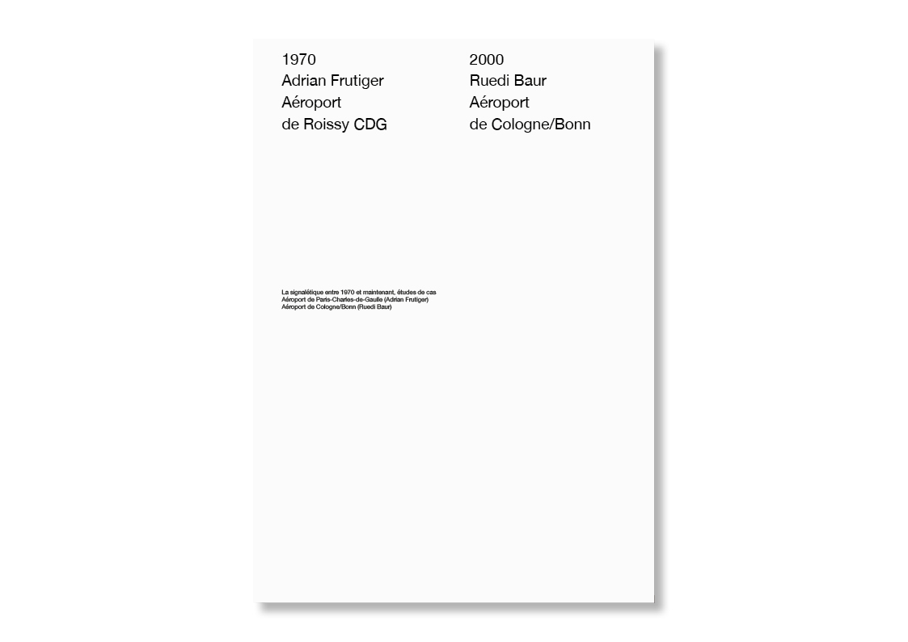
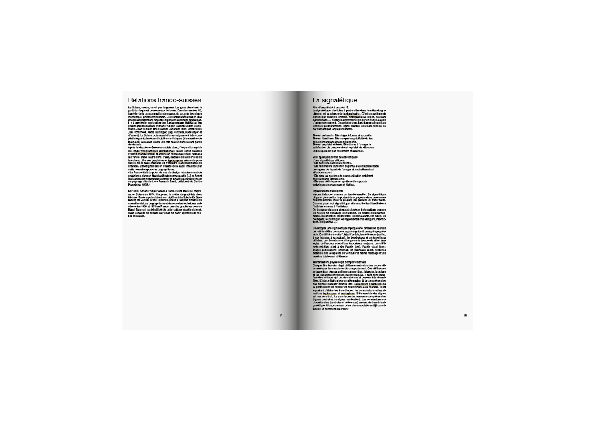
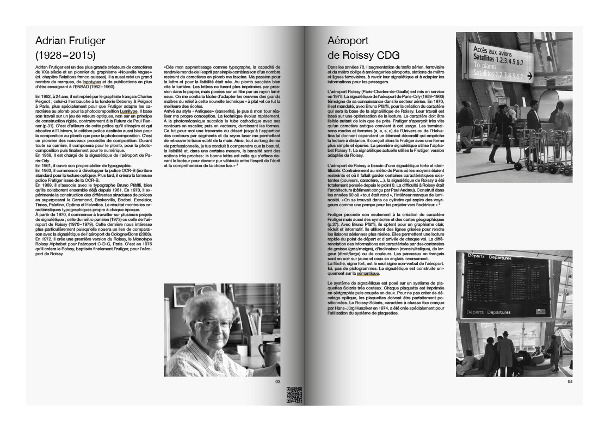
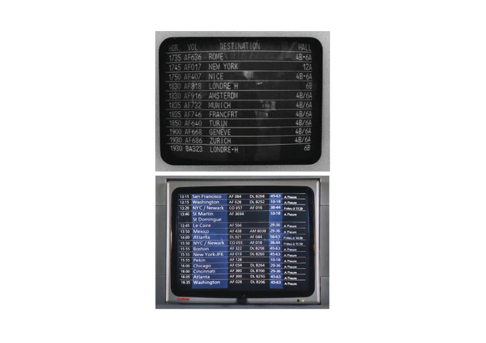
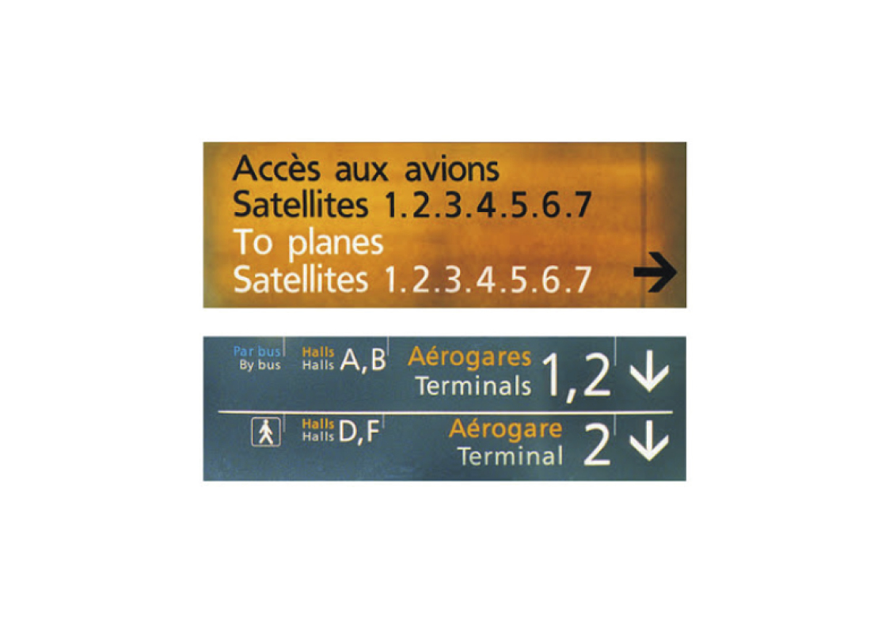
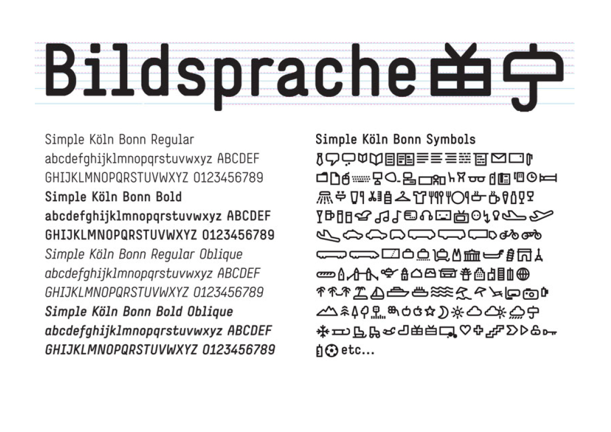

Signalétiques des aéroports de Roissy CDG et de Cologne/Bonn Analyse et comparaison des signalétiques des aéroports de Roissy et Cologne/Bonn puis réalisation d’une petite édition. Ce travail est scindé en deux parties. La première consiste à rechercher, trier et classer des informations. La deuxième partie est un travail de mise en page.
format 280 x 380 mm papier Offset 160g/m2 police Helvetica Neue







❮
❯